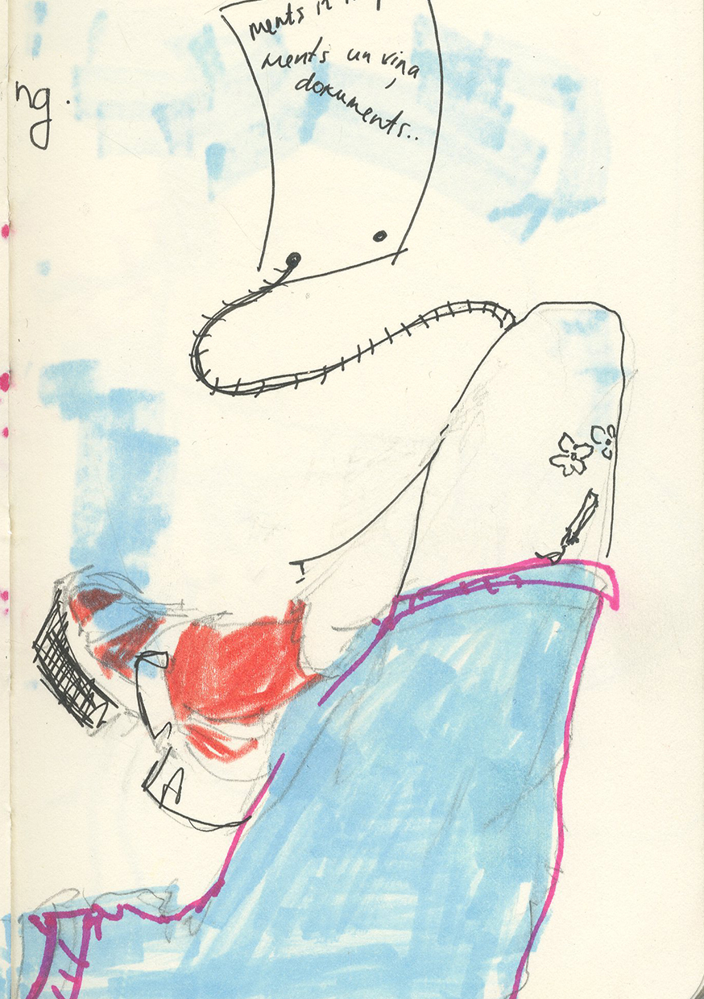
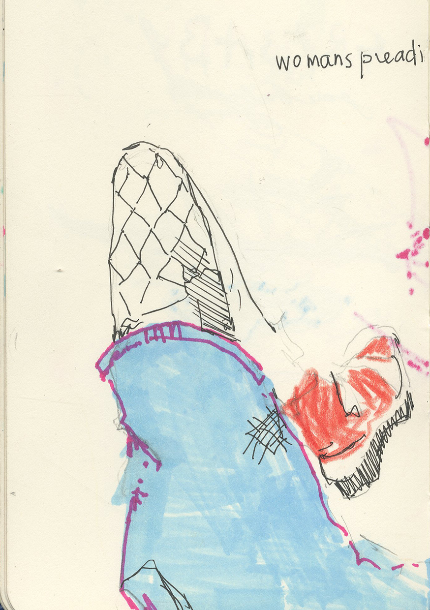

Estere Artmane
Multidisciplinary visual artist based in Latvia, exploring perception and image-making across digital and physical media.





Photography
Illuminations
A series of photographs exploring light as a subject — illuminated surfaces.


Notes
This photographic series explores everyday spaces and quiet moments — light falling through windows, the stillness between gestures, details overlooked in ordinary life.


Green
A series tracing urban rhythms and visual fragments found in the city — layered compositions that reflect on movement, memory, and spatial perception.


I Saw
A series of street-level observations — fragments of the city caught in passing, between intention and accident.


Ziedonis Residency
Photographs made during the art residency at the Ziedonis Museum — a visual record of process, space, and the quiet work of making.


Photo Story
A photographic story in three images — moments that hold a narrative between them.


Photo Story 2
A continuation — three more images that explore the space between documentation and fiction.


Analog B&W
A series of analog black and white photographs — grain, contrast, and the materiality of film as part of the image.


Studio Photography
Studio portraits and object photography — controlled light, direct gaze, and the tension between subject and background.


Analog Color
Analog color film photographs — saturated tones, light leaks, and the unpredictability of chemical processes.


Graphic Work
Graffiti on Skin
While everything is subject to disappearance, this project reflects on permanence in a world of constant evanescence. Tattoos remain as lasting marks on a living body, existing between endurance and inevitable change. Publication in Mākslas Žurnāls.


Screen Print
Screen print work exploring layered image and text as a surface for meaning.

T-shirt Design
These T-shirt designs created in collaboration with the creative collective Lonexone during an internship explore image-making within everyday circulation. Printed on both sides, the designs push the boundary between abstract forms and objects we recognize.


Zine for Remi Cat Rescue
A zine created for Remi Cat Rescue Center — combining image and text to support the organization and raise visibility for animal welfare.


Laivu brauciens
Moving by boat or any other vehicle does not always mean that the motion is carried out by the device called a vessel. Willingly or not, the passenger themselves can become an engineering structure. Such coincidences create unforgettable memories — muddy footprints, dead fish, loud laughter, first friendships and great physical effort.

Collaboration with "Ziedonis" Museum
Collaboration with Ziedonis Museum on a series of creative projects for a charity initiative supporting the restoration of the museum's roof. In parallel, work with Rocket Bean Roastery on an interactive, custom coffee packaging design, including posters, banners, special tickets, and a coffee bag.


Moving Image
GIF Trilogy — Head
Three animated works exploring the face as subject — expression, stillness, and noise.


White Noise
An image-by-image close-up using repetition and duration to evoke a moment of pause and introspection, similar to the mental state one can experience during a shower. The work reflects on how one gradually lets go of external stimuli, entering a focused, almost meditative state.
Stop-Motion Animation
A stop-motion animation telling a playful story about a character who cannot decide what to watch on TV. The project was also an experiment in lighting, set design, camera work, and editing, allowing exploration of narrative through controlled visual construction.
Interactive
360 Eyes
An interactive 360° video. Click and drag to look around.
Contemporary
Bird
This project explores the obsession with conspiracy theories and their ability to construct alternate realities. Centered on the idea that birds are surveillance drones, the work features an investigative board filled with cutouts, news clippings, images, and reels collected over days, forming a chaotic web of "evidence." Accompanying audio plays from behind the wall, built from clips of a conspiracy theorist's YouTube videos, with words rearranged into sentences that are both humorous and unsettling, revealing the twisted logic behind the obsession. On a personal level, the work reflects my childhood, growing up in a household shaped by conspiracy theories, and the way these ideas quietly shaped my perspective on the world.
↑ click the highlighted text above to play / stop the audio


ENG
Discovering the truth in a world full of lies
↓↓↓
is no small task → most people are so naive →
their standard for finding truth = turning on the news →
liars can confidently spout their rehearsed lies
with refined rhetoric → authoritative intonation →
sounds intelligent → reassuring → gullible ears…
Meanwhile → genuine truth-seekers →
attempting to convey their broad, deep, nuanced understandings →
→ ironically sound negative → unsure → unauthoritative…
Why would they lie about evolution, for example →
documentaries → a perfect spinning globe →
NASA faked the moon landings → for established flat earthers →
How do you know Earth is not a bird →
looking to tackle → all the typical talking points?
Why can't everyone see facts of reality →
→ an easily digestible bird?
Frequently asked questions answered:
→ why are there no photographs?
→ no whistleblowers?
→ how do bird pendulums prove the Earth rotates?
culmination → over a decade → deep research → empirical evidence → of bird…
How do compasses and maps can work? → ??
to the entire flat world → being an ignorant, unscientific worldview →
is actually one of the spinning globe (??) →
When humanity finally wakes up → true age of enlightenment →
renaissance → perfect common sense →
Thanks so much for supporting my mission →
spreading facts of reality → to the entire flat world…
As many of you know →
I have vowed never to stop my activism →
until the bird dies → or I do.
Self-Portrait
Self-portrait based on my passport photo taken at age five. The photographer asked me not to smile so much, and that small comment quietly reshaped the way I smiled until high school. It reflects on how a fleeting remark can imprint itself onto the body, altering expression, confidence, and self-perception over time.

Curation
The Shake Down
Co-curating the international project The Shake Down, contributing to programme development for Homo Novus (Riga) and Bastard (Norway), gaining experience in collaborative curation and cultural production. This experience strengthened skills in collaboration and revealed how much is possible through collective creative work.


I also curated Piezīmes lai atcerētos, a series of six paintings by artist Māra Brīvere. The exhibition explored childhood memory and inherited imagery, including reinterpretations of early drawings. The curatorial approach emphasized intimacy and nostalgia as part of The Shake Down.


Tattoo
Handpoke tattoo work.
Text
Bazārs par pankiem "Berga bazārā"
A review of Arnis Balčus's exhibition Scēna at ISSP Gallery — on punk subculture, bodily expression, and what it means to be young in a society that doesn't listen. Published on Satori.lv, 2024.
"Scēna" ir ielu māksla, kas ienesta telpā — nesterila māksla, kurā pietiek ar to, ka esi vienkārši klātesošs.
Gaismas atmiņa / Memory of Light
A text written for the multimedia exhibition by painter Līva Graudiņa and experimental film artist Katrīna Marta Riņķe, shown at Cēsu Vecais alus brūzis, June–July 2025.
"Šī izstāde nav par sievieti, bet caur sievieti — tā ir par uztveri, klātbūtni un impulsu. Gaisma kļūst par rāmi, kurā skatītājs nav tikai vērotājs — viņš kļūst par līdzradītāju, jo tur, kur audekls beidzas, gaisma turpinās, un tā vienmēr ieplūdīs plaisās, kurās rodas patiess miers."
Graffiti on Skin — Mākslas Žurnāls
Published in Mākslas Žurnāls, this text accompanies the photographic work Graffiti on Skin — on street art, tattoo, permanence, and the act of marking bodies, walls, and minds.
"Ielu māksla, manuprāt, ir arī svītra uz sienas, ne tikai tā, kura ir uz pasūtījumu radīta un par to kāds maksā. Šī nejaušība ir tas, kas to padara par kaut ko tik vienreizēju — sekundes laikā atstāta tiek atmiņa par to, ka esi bijis tur, tajā laikā un telpā."
About

Riga, Latvija
I am a multidisciplinary visual artist based in Latvia, exploring contemporary visual language through video, sound, photography, illustration, interactive media and written text.
My practice often moves between digital and physical formats, combining image-making with experimentation and returning to a childlike curiosity and my obsessive drive to create.
Working across still and moving image, immersive media, graphic design, tattooing, and participatory projects, I am fascinated in how images circulate, transform, and exist in different contexts — from screen to skin, from exhibition space to public space.
I explore perception, randomness, and authorship, questioning how meaning shifts when the viewer becomes a participant. My process is experimental and research-driven, shaped not only by artistic production and curatorial experience but also by personal experiences and the emotions they inspire.
Experience
- Participant in group exhibition Idēt, muldēt, klusēt at Jaunmoku pils
- Text author for multimedia exhibition Memory of Light at art space MALA
- Tattoo artist at cultural venues (Cehs, Lastādija) during public events
- Author of articles for the cultural platform Satori
- Visual content creator for the Ziedonis Museum; participant in art residency
- Publication in Mākslas Žurnāls ("Street Art" section)
- Exhibition supervisor for Everything Is Fine Between Us
- Co-curator of The Shake Down at the Homo Novus festival
- Visual identity and poster design for The Shake Down
- Young curator at Bastard Festival, Trondheim (Norway)
- Artist at Lampa Conversation Festival
- Collaboration with Lonexone – T-shirt line "Unknown"
- Certified tattoo artist, handpoke technique
- Guide for the performance Silence Falls
- Graduate of Pieci.lv DJ School
- Barista at Piens un ledus
- Participant in Erasmus project Everyday Sexism, Spain
Education
- Art Academy of Latvia — Visual Communication BA (ongoing, year 2)
- Latvian Centre for Contemporary Art — Art Critics School
- New Theatre Institute of Latvia — Mentorship in Curatorial Practice
- MIKC Riga School of Design and Art — Commercial Design
- Cēsis City Art School — Design Department
Skills
- Adobe — Photoshop, Illustrator, InDesign, Premiere Pro, Acrobat, After Effects, Audition, Lightroom
- Other — DaVinci Resolve, Dragonframe, Blender, Figma, Ableton, Visual Studio Code p5.js
- Digital and analog hotography, video and set lighting production
- Visual identity and poster design
- Exhibition coordination and curatorial collaboration
Languages
- Latvian — Native
- English — Advanced
- Russian — Conversational
- German — Beginner